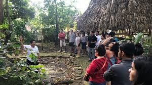
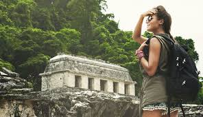

El turismo arqueologico o arqueoturismo es un tipo de turismo que se caracteriza por viajar, contemplar y estudiar los elementos arqueologicos de un destino turistico. El objetivo del arqueoturismo es promocionar la arqueologia que constituye un lugar para dar a conocer su historia es una ciencia que tiene como objetivo el conocimiento de la historia y la prehistoria para ponerla al servicio de la sociedad. Por esta razon, sus relaciones con la industria turística son esencialesya que contribuye a alcanzar sus objetivos a traves de la generacion de ingresos que auspicien la preservacion;investigacion; conservación y difusion del patrimonio arqueologico..
|  |  |
Es explosion de turistas en lugares de altisima sensibilidad conservacionista ha ido en detrimento de los atractivos arqueologicos, base tecnologica y cientifica del destino, por lo cual en no pocos casos las autoridades se han visto en la necesidad de limitar las visitas o incluso cerrarlos para prevenir un mayor deterioro, vista su fragilidad intrinseca. Por otro lado, la explotacion economica, puede entrar en conflicto con los intereses cientificos, educativos, tecnicos o socio-culturales para asegurar su proteccion o continuidad a favor de futuras generaciones. Es tan algido el problema que se ha llegado a crear replicas del original (sea del sitio, ceramica, utensilios, etc.) como una forma de aplacar los animos de unos y otros a favor del turismo.
| |
|
| |
|